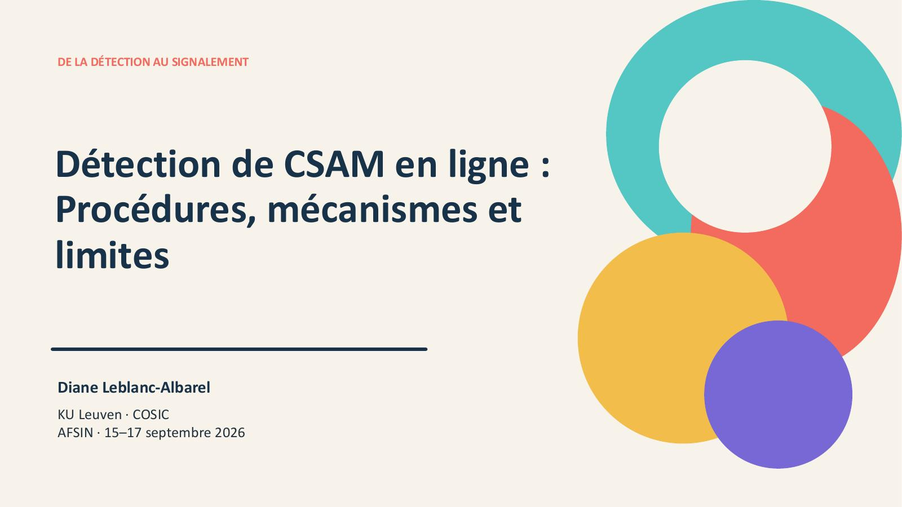
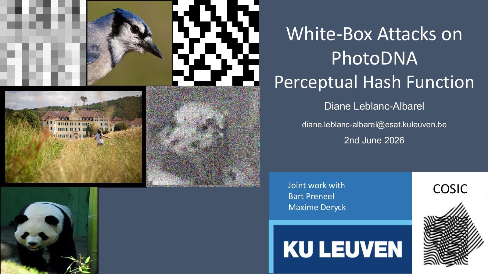

Perceptual hash functions
Security and robustness of systems used to recognize visually similar media, including PhotoDNA, NeuralHash and PDQ.
KU Leuven · COSIC
Postdoctoral researcher in cryptography, cryptanalysis, perceptual hash functions, and security protocols.
Research profile
Security and robustness of systems used to recognize visually similar media, including PhotoDNA, NeuralHash and PDQ.
Attack models, variants and implementation aspects of TMTO techniques, building on my PhD work on Rainbow tables.
Authentication and password-manager protocols, with a focus on privacy, integrity and realistic adversarial models.
Featured project
Recent work studies the reliability of deployed perceptual hash functions, their collision behavior, and the consequences for large-scale content scanning.
Selected publications
Diane Leblanc-Albarel and Bart Preneel. 35th USENIX Security Symposium, 2026.
Maxime Deryck, Diane Leblanc-Albarel and Bart Preneel. Preprint.
Gildas Avoine, Xavier Carpent and Diane Leblanc-Albarel. Preprint.
Diane Leblanc-Albarel and Bart Preneel. Preprint.
Work on TMTO cryptanalysis and legacy mobile communication systems.
Slides and seminars

AFSIN · September 2026
French slides on reporting pipelines, platform scanning, NCMEC, EU/FR regulation and PhotoDNA attacks.
Slides in French
SoSySec seminar · Rennes · June 2026
Seminar slides introducing Alleged PhotoDNA, white-box attacks, and client-side scanning implications.
Slides Event pageI co-authored the French book chapter Les mots de passe à bout de souffle with Gildas Avoine in Le Calcul à Découvert, and the article Comment choisir un bon mot de passe ? in The Conversation.
I also contribute to inclusion activities, including an IEEE Women in Engineering book circle at KU Leuven and past Python workshops for middle-school girls in Rennes.
I completed my PhD in October 2023 under the supervision of Gildas Avoine in the SPICY team at IRISA, Rennes. My PhD focused on Time-Memory Trade-Off attacks, especially Rainbow tables.
Before my PhD, I graduated in Mathematical Engineering from INSA Rouen Normandie and completed a Master 2 in Information Systems Security at the University of Rouen Normandie.